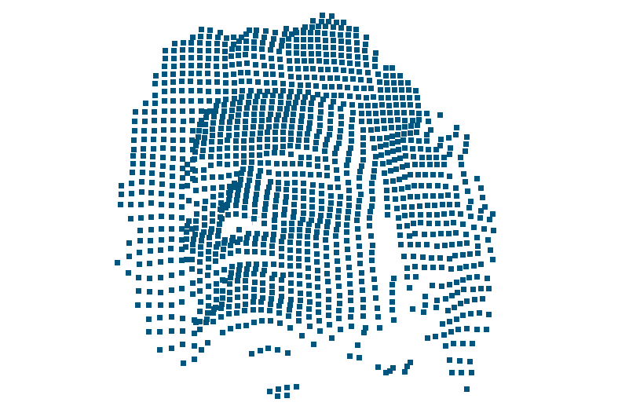

Photogrammetric Computer Vision and Digital Image Processing
This section describes exercises which were solved by me during cources PCV and DIP in the university. Exercise "Panorama creation" deals with the following three photos of the same planar object which were taken with a slightly different horizontal orientation of camera:
Program performs stitching of the left image to a center one and then stitching of the right image to the result. For every stitching operation user chooses 4 pairs of matching points. From image coordinates of these points homography in 2D is calculated and applied. Resulting image which is shown below is stored on the disk:

Exercise "Epipolar lines" performs computation of epipolar lines on the images of the same object taken from different viewpoints. User chooses 8 pairs of matching points. Images with epipolar lines are shown and saved.

Exercise "Object in 3D" calculates 3D euclidean coordinates of points of a 3D-object from known coordinates of these points on two images of this object. Also 5 control points with known euclidea coordinates are used. Result is a point cloud in euclidean coordinates. Visualisation of the result shows that the point cloud represents a part of bust of Ludwig van Beethoven:
Exercise "Image restoration" deals with image filtering methods. In the beginning two noises are applied for an input image: salt-and-pepper noise and gaussian noise. Both degraded images are processed by 3 filters: averaging filter, median filter and bilateral filter. The original image, its degraded version and two best results of filtering (median and bilateral filters) are presented:
Exercise "Unsharp masking" applies operation of unsharp masking to several degraded images. Unsharp masking is a technique of image enhancement which increases local contrast of image edges, so that image is perceived as more sharp. The technique creates a blurry copy of degraded image, subtracts it from initial degraded image, thresholds and scales the difference and then adds the result to initial degraded image. Smoothing of the initial image is done by convolution. This fact is used to compare processing times of spatial convolution and frequency convolution. Convolution in frequency domain is not only much faster, but also its complexity is independent from the kernel size. The degraded image and the most representative result of unsharp masking application are the following: